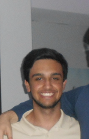
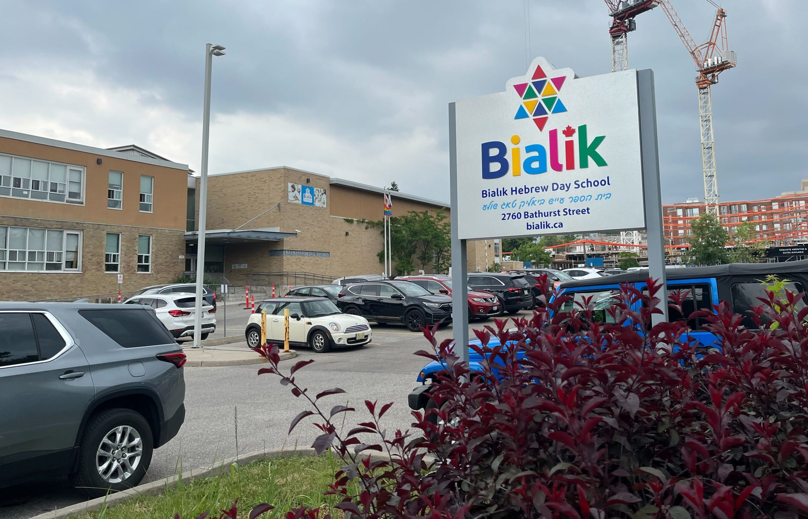

History Council
A not-for-profit subgroup serving the interests of Wii Sports. We keep the record straight.
Mission statement and founding date to be added.
The Council
Members listed in order of seniority.
-
I
JC
Justin
Most senior member
Honoree of the W Justin Bilding (Scotiabank Arena). Assigned the W Glazer and W Isaac Bildings, and featured on the W Josh Bilding.
Results attendance: 3 of 3.
-
II
IS
Isaac
Second in seniority
Honoree of the W Isaac Bilding (339 King St. N., Apt. 1503). Maintains resultscountdown.xyz.
Results attendance: 3 of 3.
-
III
DF
Daniel
Third in seniority
Honoree of the W Daniel Bilding (Roy Thomson Hall). Assigned the first W Bilding on record: the CN Tower, July 19, 2023.
Results attendance: 3 of 3.
-
IV
JS

Josh
Fourth in seniority
Honoree of the W Josh Bilding (UCC Clock Tower).
Results attendance: 3 of 3.
The Archives
Affiliated Schools
